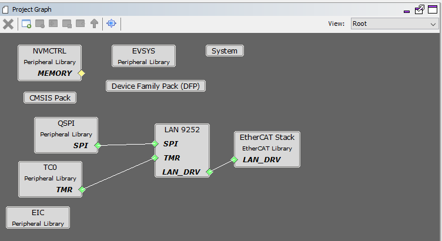
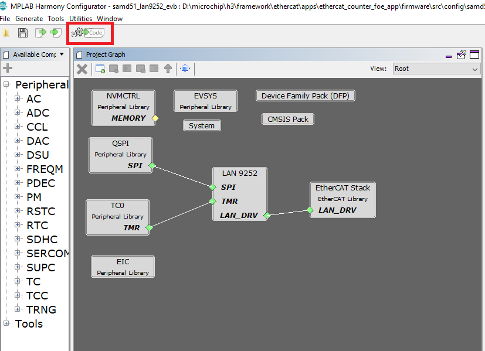
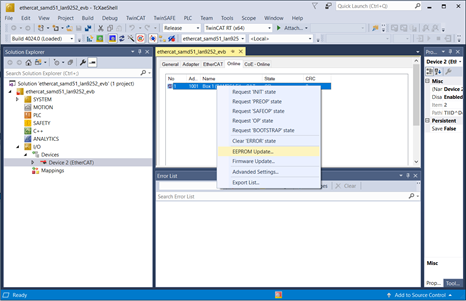
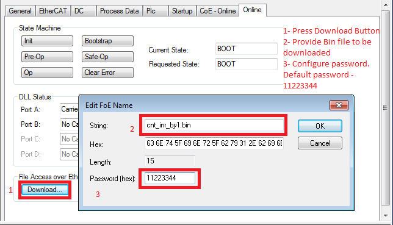

EtherCAT Trigger & Counter and FoE Application for EVM_LAN9252_SAMD51
This EtherCAT example application demonstrates Firmware Update over EtherCAT capability.The Counter and Trigger parameters are configured in the < ethercat repo >/apps/ethercat_counter_foe_app/firmware/src/slave_stack/lan9252 and demonstrates the communication between the EtherCAT Manager (TwinCAT Manager) and the EtherCAT Client (EtherCAT LAN9252). The firmware update is performed by FoE (File over EtherCAT) protocol. It is triggered by the EtherCAT Manager (TwinCAT Manager) which then download the firmware onto the EtherCAT Client (LAN9252) on the EVB_LAN9252_SAMD51 board.
Note : The EtherCAT Library can also be configured to execute on other EthertCAT development boards available from Microchip. Additional instruction at available in the Create your first EtherCAT Application section.
This demonstration help document contains the following sections:
- MPLAB® Harmony Software Setup
- Hardware Setup
- Beckhoff Slave Stack Code (SSC) Generation
- MPLAB® Harmony Project Configuration
- Completing The EtherCAT Application
- Running The Application
- TwinCAT Manager and Microchip EtherCAT Client communication
- EtherCAT interface detect and EEPROM Programming
- Trigger and Counter Demonstration
- File over EtherCAT communication
- TwinCAT Manager and Microchip EtherCAT Client communication
1. MPLAB® Harmony Software Setup
The following MPLAB® software components are a prerequisite for the subsequent steps in this demonstration. Please follow the download and installation instructions available at below links.
- MPLAB® X Integrated Development Environment
- MPLAB® XC32/32++ C Compiler
- MPLAB® Harmony Configurator
- On the management PC, download and install the TwinCAT 3 Engineering Full Setup at https://www.beckhoff.com/english.asp?download/tc3-download-xae.htm. Select the latest TwinCAT 3.1 Version and click on the link. Note the dialog box that shows the TwinCAT tool to be installed TC31-Full-Setup.3.1.XXXX.XX and click on “Start Download”. Follow instructions to download.
2. Hardware Setup
The following tools will be used to program and debug the application on the target hardware.
- MPLAB® ICD4 + ICD4/PICKIT 3 Target Adapter Board using JTAG interface.
The following development board will be used to develop and execute the EtherCAT application.
-
LAN9252 - EtherCAT Client Controller evaluation kit with SAMD51 Microcontroller
The instructions in this guide are also applicable to other development boards with LAN9252 EtherCAT client device. Hardware settings are board dependent and may vary between boards.
- Connect a micro USB cable to port J8 to power the board..
- For programming, connect a ICD4 JTAG cable to port J10 of the EVB_LAN9252_SAMD51 board.
-
Connect RJ45 connector J1 to the TwinCAT Manager.
-
Block diagram of the EVB_LAN9252_SAMD51 board -

3. Beckhoff Slave Stack Code (SSC) Generation
Follow instruction at this link to generate Beckhoff Slave Stack Code: Steps to generate Beckhoff Slave Stack Code
MPLAB® Harmony Project Configuration
There are two options available for downloading/installing the MPLAB® Harmony Software Repositories from github & gitee.
The required repositories can be cloned from the github (or gitee) by using a local git client (such git bash). The MPLAB® Harmony Repositories are available at the following links:
https://github.com/Microchip-MPLAB-Harmony/
https://gitee.com/Microchip-MPLAB-Harmony/
The csp, dev_packs, mhc and ethercat repositories should be cloned. The required repositories can also be cloned (downloaded) or previously downloaded repositories can also be updated by using the MPLAB® Harmony 3 Content Manager. The following sections provide details on using the MPLAB® Harmony 3 Content Manager to download the repositories.
-
Refer to the EtherCAT MPLAB® Harmony Software Setup https://github.com/Microchip-MPLAB-Harmony/ethercat/wiki/create-your-first-ethercat-application for details about creating an EtherCAT project.
-
The following Project Graph diagram shows the MPLAB® Harmony Library components that are required by the FoE EtherCAT application on the EVB_LAN9252_SAMD51 board.

- Click on the EtherCAT Stack in the Project Graph window. In the Configuration window,
- The Slave Stack source directory path should point to the folder that contains the files generated by the SSC tool.
- The Enable FoE checkbox enables File over EtherCAT feature.

- Click on LAN9252 component from the project graph.
- EtherCAT Interrupt Priority Level :- This defines a interrupt priority range. All application interrupts whose priority is more than or equal to this level will be disabled during an EtherCAT interrupt service routine execution.
-
Following table maps EtherCAT interrupt name with respective peripheral channel selection. EIC interrupt handler and the SPI chip select Configuration for EVB_LAN9252_SAMD51
Interrupt Name EIC Channel SYNC0 Interrupt EIC_EXTINT0 SYNC1 Interrupt EIC_EXTINT1 IRQ Interrupt EIC_EXTINT7 Other Usage Port Pin SPI Chip Select PORT RB11 Error Select Pin PORT RB31
NOTE - EIC/GPIO/PIO pins for External event registration and event handler processing can be selected based on the micrcontroller and LAN9252 interrupt support.

-
EIC, QSPI and TC0 are configured as per the application requirement.
-
The below PINs are configured for the application
-
QSPI PIN Configuration for EVB_LAN9252_SAMD51
QSPI Custom Name Function PORT PIN ID QSPI_MOSI QSPI_DATA0 PA08 QSPI_MISO QSPI_DATA1 PA09 QSPI_SCK QSPI_SCK PB10 SPI_CS GPIO PB11 -
PIN Configuration for EtherCAT External Interrupt Pins for EVB_LAN9252_SAMD51
EIC Custom Name EIC Channel Port Pin EIC_EXTINT0 EIC_EXTINT0 PORT PB16 EIC_EXTINT1 EIC_EXTINT1 PORT PB17 EIC_EXTINT7 EIC_EXTINT7 PORT PB23

-
-
Open NVIC configuration window from MHC→Tools. Set the QSPI Interrupt Priority Level to 2. This interrupt priority level is selected to be less than value of the EtherCAT Interrupt Priority Level configuration option in the LAN9252 component.

-
The application will use the default clock options. No changes are required in clock settings.
-
The FoE application uses a customized linker file. The ROM_LENGTH attribute in the linker file is modified to 0x40000 for ATSAMD51J19A. Bank A memory range is configured between 0x00000 to 0x3FFFF. Bank B memory range is configured between 0x40000 to 0x7FFFF.
The Dual Bank feature enables the FoE firmware to be executed from one bank while an updated version of the firmware is programmed into the other bank. The APP_BankSwitch() application function is called to swap the banks and to reset the device when the programming is complete. The APP_RunApplication() function is called to execute the new firmware.
To add a customized linker file to the project, uncheck the Add linker file to project option. Navigate to System>Project Configuration>Tool Chain Selections>Add linker file in the MHC Project graph to add the customized linked script file.
See the below screen capture:
-
Generate the code by clicking the Generate Code button (marked in red).

-
The following diagram shows the generated EtherCAT project. This contains the sample_app.c file. It does not contain the Beckhoff Slave stack code. The Beckhoff Slave Stack Code should be generated using the SSC tool with the required configuration and the Microchip-SAMD51-EtherCAT-Slave_SSC_Config.xml file. The folder view on the right side in the below figure shows the EtherCAT project with SSC stack files added to the folder.

4. Completing The EtherCAT Application
At this point, the FoE application MPLAB® X IDE project is ready along with the SSC Tool generated code. The following section describes the steps to be followed to update the FoE application files. The below table lists the MPLAB® X projects available for the demonstration. The MPLAB® X project mentioned in this table is available at < install-dir >/ethercat/apps/ethercat_counter_foe_app/firmware.
-
MPLAB® X Project table
Project Name Target Device Target Development board Description sam_d51_lan9252_evb.X ATSAMD51J19A EVB-LAN9252_SAMD51 ETherCAT evaluation board with LAN9252 -
The project contains the MPLAB® Harmony components that are required for an EtherCAT application. The application files need to be added to the project.
The application source files to be added to the project, the ethercat_counter_foe_app demo, are available in Harmony_Repo_Path/h3/ethercat/apps/ethercat_counter_foe_app/firmware/src folder.
-
The app.c, app.h, main.c files are updated to demonstrate the application.
-
The apps/ethercat_counter_foe_app/firmware/src/config/sam_d51_lan9252_evb/ethercat_foe.ld linker file is a modified linker file to be used in the FOE application.
-
The sample application files sample_app.c, sample_app.h and sample_appObjects.h, generated by SSC tool, are updated for the application requirement.

The SSC tool generated sample application files, highlighted in the above screen capture above, are updated for Counter, Trigger peripheral interface and for the FoE read/write operations. These are available in the apps/ethercat_counter_foe_app/firmware/src/slave_stack folder.
-
Verify the XC32 Compiler Toolchain version and set the Connected Hardware Tool to ICD4, if this is connected to J10, or PICkit 3. Press Apply button and then press OK button.
-
Build the application by clicking on the Build Main Project.
5. Running The Application
1. TwinCAT Manager and Microchip EtherCAT Client communication
1. EtherCAT interface detect and EEPROM Programming
-
Upon successful installation of the TwinCAT Manager, the network adapter will be moved to Installed and ready to use devices section as shown in the following figure.

Copy the available SAMD51_EtherCAT_Slave.xml file from < harmony-repo >app/ethercat/slave_stack/lan9252/ directory to the TwinCAT\3.1\Config\Io\EtherCAT directory.
-
In TwinCAT XAE, create a New Project (File=>New=>Project). In the New Project Window, select the TwinCAT Projects option and then click OK
-
Connect port zero (J1 connector) of the EVB_LAN9252_SAMD51 board to the TwinCAT Server using a RJ45 Ethernet cable, and then power up the board. The Link/Act LED should be ON at Port zero when the cable is connected. If the Link/Act LED is not ON, then this indicates that there is an issue with the connection or the cable.
-
Expand the IO option in the TwinCAT XAE project window and right click on Devices. Select Scan.
-
Click OK if the TwinCAT network interface is selected and continue scanning as shown in the below image.

-
Click OK to continue scanning and Click Yes in the Scan for boxes prompt.

-
EEPROM Programming After a successful scan, click on Device 2 (EtherCAT) in the solution explorer window of the TwinCAT tool and Click Online in the TwinCAT project window. Once this is done, highlight the Device. This should read OP.

2. Trigger and Counter Demonstration
This section describes the Tigger ( Output value for the TwinCAT manager and Input value to the LAN9253 EtherCAT device ) parameter and the Counter (Input value to the TwinCAT manager and Output value for the LAn9253 EtherCAT device ) parameter configuration. Counter parameter value is determined based on Trigger parameter value. If Trigger parameter value is 0, then Counter parameter is cleared. Trigger parameter value is used to determine value of Counter parameter.
-
Input Trigger configuration - From I/O level on the Solution Explorer (left window), go to Devices=>Device # (EtherCAT)=>Box 1 (SAMD51 EtherCAT Slave)=>Outputs process data mapping=>Trigger.
-
In the top center window, select Online tab. Click Write and then enter 1 in Decimal: field and click OK.

-
Output Counter Observation - From I/O level on the Solution Explorer (left window), go to Devices=>Device # (EtherCAT)=>Box 1 (SAMD51 EtherCAT Slave)=>Inputs process data mapping=>Counter.
-
In the top center window, select Online tab. The counter value should be incrementing.

3. File over EtherCAT communication
-
FoE (File over EtherCAT) Test Update - Click on Box1, Select “Online” tab. Before FoE test Curent state and Requested state should be in OP mode.

-
For file download, change the mode from INIT to BOOT mode.

-
After clicking Download button , select BIN file that needs to be downloaded and configure the Password as per the EtherCAT component password configuration.

The sample BIN files present in the < harmony-repo >/ethercat/apps/ethercat_counter_foe_app/firmware/src/FoE_Bin_imagefiles/lan9252_foe_binfiles folder can be used to verify the operation of the FoE application.
NOTE - A BIN file can be generated from the generated EtheCAT HEX image after configuring the Project Properties->Conf:->Building->Execute This Line After Build as such: ${MP_CC_DIR}/xc32-objcopy” -I ihex -O binary “${DISTDIR}/${PROJECTNAME}.${IMAGE_TYPE}.hex” “${DISTDIR}/${PROJECTNAME}.${IMAGE_TYPE}.bin

NOTE - The Execute This Line After Build option should be unchecked in debug mode.
-
The download process can be tracked as shown in the figure below-

-
After successful download, change the state from BOOT to INIT mode. This helps the application switch the bank from BANK B to BANK A and the newly downloaded firmware will be executed from BANK A. The new application starts running from flash location 0x0.